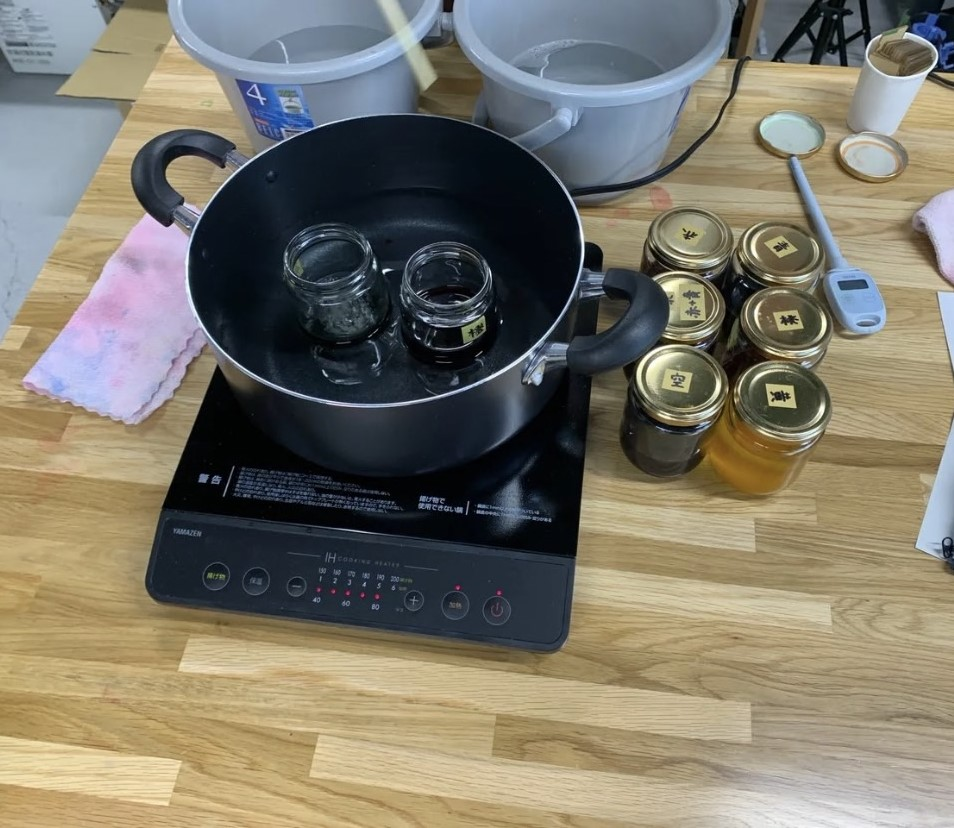
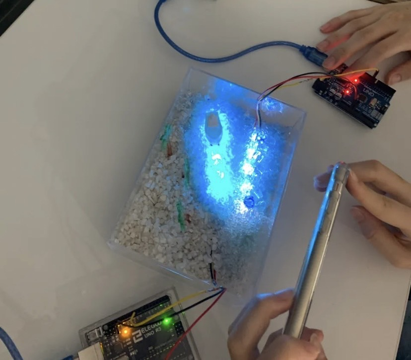

概要
私たちは最終課題でLEDを使用した海のメディアアートを製作することに決まりましたプロセスメモ
■は考えないといけないこと、疑問●は具体的にやること
→はやったこと
①
■何を製作するのか
→LEDを使用した海のメディアアート
■使用するものの用意
→海の海水や砂浜を表現するビーズや容器を用意した
②
●どのようにLEDを設置してどのように光らせるかを考える
●透明の箱の下にLEDを設置して光らせてみる
●実際に模型を作ってみる
■LEDをどのように光らせるか
●ヤシの木や船の模型をつくる
●LEDをきれいなグラデーションになるように光らせた
③
→fusionとレーザーカッターで模型を作った
→LEDのプログラミングを完成させLEDを光らせた
④
■実際にビーズを敷き詰めて撮影をやってみる
■ビーズなど材料でたりないところをどう補うかを考える
→ヤシの木の模型に色をつけた
→ファブラボでアクリルに色をつける

→実際にビーズやLEDを配置し、完成形を作成してみた
上から見た完成はこんな感じ

●動画の編集
完成動画
ここから使用したもの
班のメンバー
yoshida haruka
Ayu